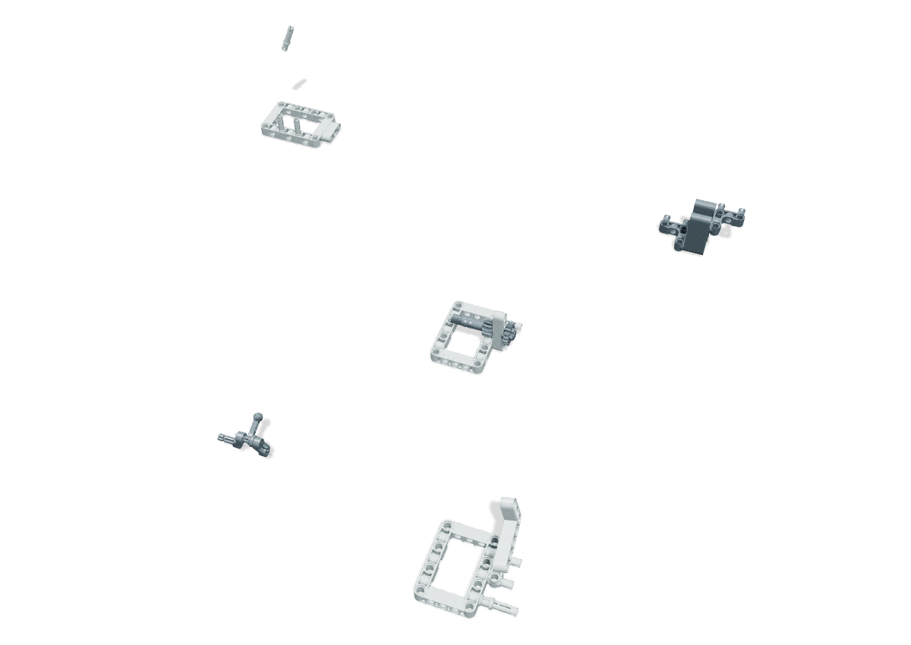

JevDuo
慢模型定子目标，Router 分派执行器，
JEV 连续选择动作。

正在加载装配模型慢模型定子目标，Router 分派执行器，
JEV 连续选择动作。
工作方式
一次只走一条路。子目标、执行回执与最新观察，都回到同一个 runtime。
慢模型
规划一个有界子目标
目标、输入与停止条件都在这一次规划里确定。
完成 · 遇阻 · 预算到达回到慢模型核验，再继续、调整或结束。
GUI 路线 · 局部展开
慢模型只给子目标与必需输入。之后的每一步，JEV 读最新截图，在候选动作里选一个。
子目标已下发
慢模型 · 子目标
装好支架模块，
保存当前工程。
状态等待本段执行结果
第 1 / 5 步
执行后读回：搜索框已激活执行反馈
装配案例
回放按模块装配进度对齐，不作为 JEV 的性能对照。
交互查看
旋转模型，选择挡位，播放运动回放。